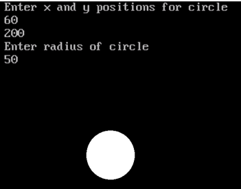

#include<stdio.h>
#include<conio.h>
#include<graphics.h>
#include<dos.h>
void floodFill(int x,int y,int oldcolor,int newcolor)
{
if(getpixel(x,y) == oldcolor)
{
putpixel(x,y,newcolor);
floodFill(x+1,y,oldcolor,newcolor);
floodFill(x,y+1,oldcolor,newcolor);
floodFill(x-1,y,oldcolor,newcolor);
floodFill(x,y-1,oldcolor,newcolor);
}
}
int main()
{
int gm,gd=DETECT,radius;
int x,y;
clrscr();
printf("Enter x and y positions for circle\n");
scanf("%d%d",&x,&y);
printf("Enter radius of circle\n");
scanf("%d",&radius);
initgraph(&gd,&gm,"c:\\turboc3\\bgi");
circle(x,y,radius);
floodFill(x,y,0,15);
getch();
closegraph();
return 0;
}
Output:
